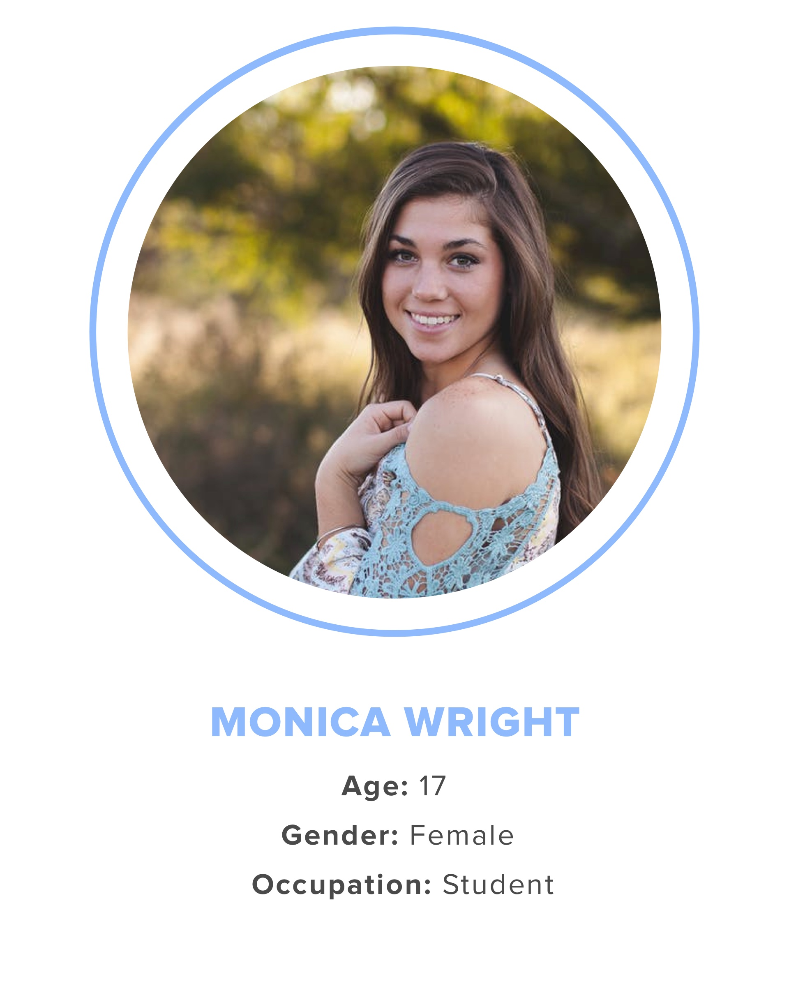
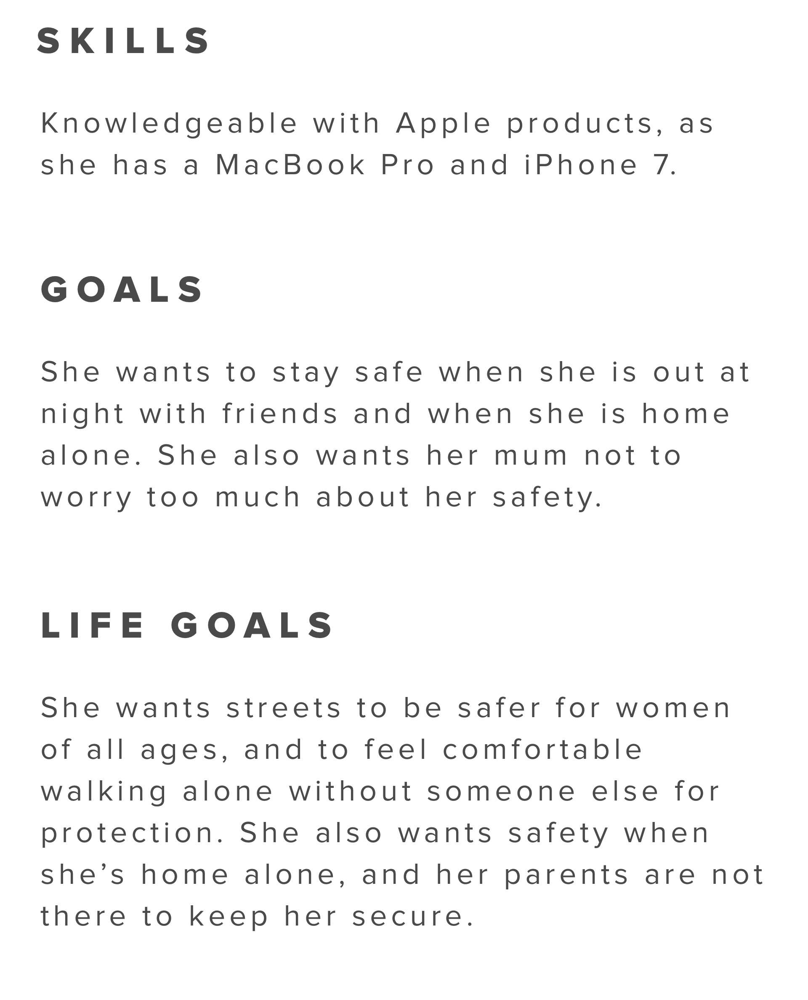
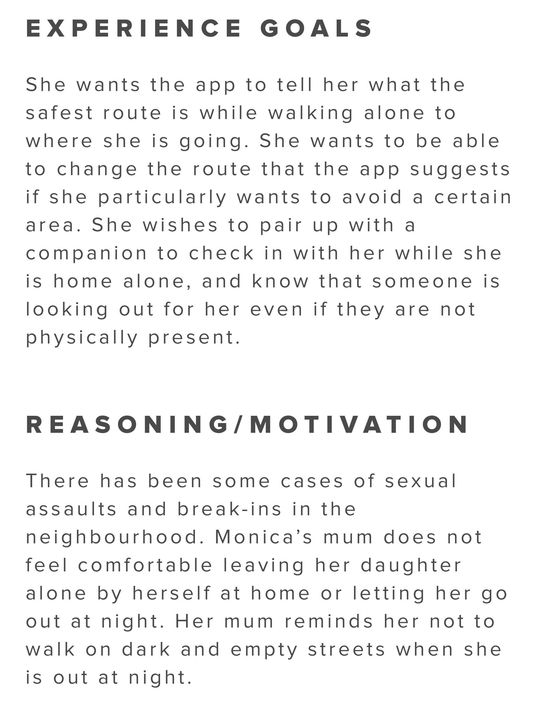

Elevating personal security no matter where you are
A new feature that serves as a personal security solution for both walking alone at night and staying safe while home alone. Giving users the ability to filter their maps by what matters most to them when it comes to safety, as well as allowing companions to be requested while users are alone at home. Ensuring their safety no matter where they are.
Companion is an on-demand personal security mobile app, allowing young women to stay safe while walking home alone at night. Users can requests their friends and family to be their companion by watching over them virtually.
To get a deeper understanding of our user’s experience with the current state of the app, we conducted user interviews. All of them mentioned that they have previously had the feeling of being unsafe while walking alone late at night, and would take the safer route from point A to B, regardless of the distance.
Based on the user interview results, we compiled information to created personas that would help guide our design decisions throughout the project.
Primary Persona



Identifying opportunities
We used insights gained from user interviews and our understanding of current touchpoints to brainstorm ideas for a new feature. Our main goal with these new additional features is not only to increase safety, but also to create an ecosystem where people can easily get help whenever and wherever they feel unsafe.
We came up with a map filter feature, which allow users to select elements that makes them feel safe and actually be safer walking on the street at night, as well as the check-in system when users are home alone.
To ensure the person is safe home alone while everyone is away, a check-in system helps to easily inform the user’s companion that they are okay. If user does not respond after several hours, the companion will be automatically informed that there might be something wrong and to call the user to check their safety.
{kind=link}
{kind=link}
{kind=link}
{kind=link}
{kind=link}